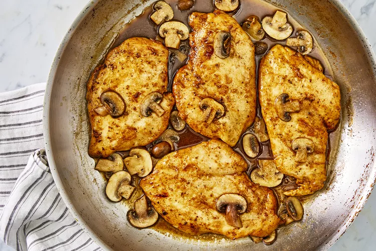

Chicken Marsala

Description
Chicken Marsala is a delicious dish with thinly sliced pieces
of pan-fried chicken breast and mushrooms in a reduced wine
sauce.
It's name comes from the fortified Italian wine used to give
the dish its trademark deep, nutty, and slightly sweet flavor
Ingredients
- 1/4 cup all-purpose flour
- 1/2 teaspoon salt
- 1/4 teaspoon ground black pepper
- 1/2 teaspoon dried oregano
- 4 medium skinless, boneless chicken breast halfs - pounded 1/4
inch thick
- 4 tablespoons butter
- 4 tablespoons olive oil
- 1 cup sliced mushrooms
- 1/2 cup Marsala wine
- 1/4 cup cooking sherry
Cooking Instructions
- In a shallow dish or bowl, mix together the flour, salt,
pepper and oregano. Coat chicken pieces in flour mixture.
- In a large skillet, melt butter in oil over medium heat.
Place chicken in the pan, and lightly brown.
Turn over chicken pieces, and add mushrooms.
Pour in wine and sherry. Cover skillet; simmer chicken 10
minutes, turning once, until no longer pink and juices
run clear.